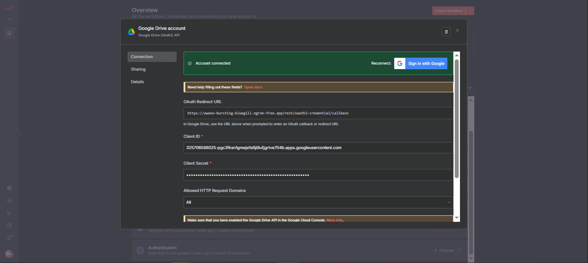
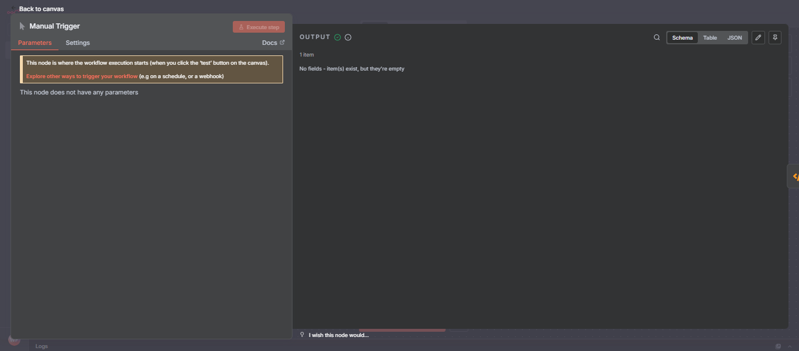
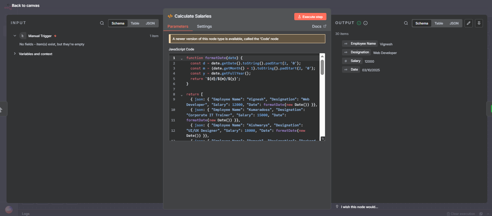
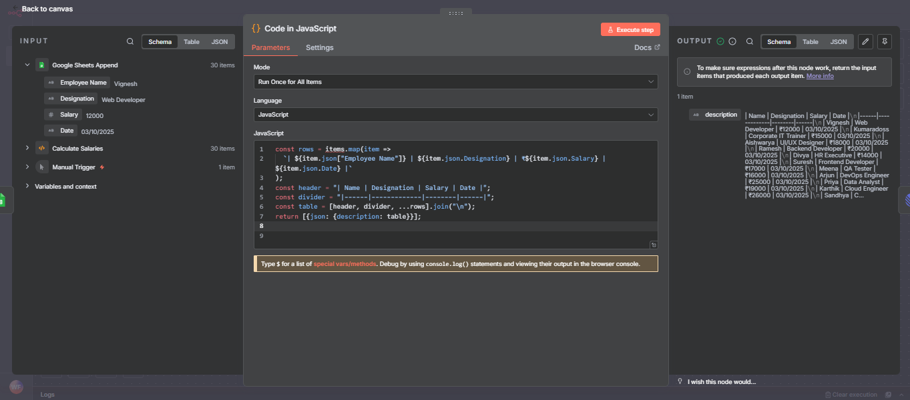
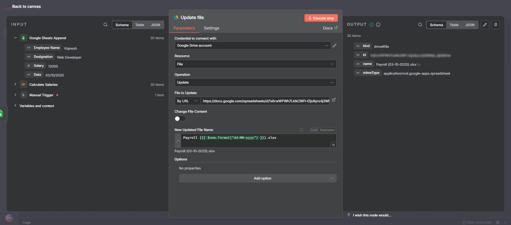

n8n Payroll Automation Workflow: Complete Tutorial
Welcome to the complete n8n payroll automation workflow tutorial. This guide shows you how to automate payroll management using n8n's powerful workflow automation platform integrated with Google Sheets, Telegram, Google Drive, and Linear. You'll learn to automatically log employee salary data, send instant notifications via Telegram bot, create automated backups in Google Drive, and update Linear issues—all from a single workflow trigger. This step-by-step tutorial includes API credential setup, node configuration, and troubleshooting tips for beginners and intermediate users looking to streamline their payroll processes.

What this workflow does:
- Generates or receives a batch of employee payroll data.
- Automatically appends this data to a Google Sheet for structured record-keeping..
- Sends instant payroll notifications via Telegram to individuals or groups.
- Creates a backup of the payroll spreadsheet in Google Drive.
- Posts a neatly formatted summary (as a table) to a Linear issue, keeping the broader team in sync with payroll activity.
Use this workflow to automate your payroll updates, keep all stakeholders informed, and maintain reliable records—all from a single, easy-to-run n8n automation.
Overview
Welcome to your end-to-end guide for the “Payroll Automation” n8n workflow project! This tutorial shows you how to import, configure, and run a payroll automation workflow that logs salary data in Google Sheets, sends Telegram notifications, and updates Linear issues—using exact nodes and settings from your uploaded workflow.
- To explain what a file system is and why understanding Windows file structure is important.
- To describe types of Windows file systems (e.g., FAT32, exFAT, NTFS, ReFS) with their best use cases and limitations.
- To guide users through navigating Windows directories (system, user, and application folders), including critical system and hidden folders.
- To teach best practices for file naming, permissions, security, backup, and recovery.
- To enable troubleshooting, efficient management, and protection of files using both File Explorer and command-line tools.
- To provide practical tips for organization, maintenance, and advanced file system topics like disk management, optimization, scripting, and automation.
1. Introduction
Welcome to your end-to-end guide for the “Payroll Automation” n8n workflow project! This tutorial shows you how to import, configure, and run a payroll automation workflow that logs salary data in Google Sheets, sends Telegram notifications, and updates Linear issues—using exact nodes and settings from your uploaded workflow.
Prerequisites:
- n8n account (self-hosted or cloud).
- Google account (Sheets & Drive).
- Telegram account (app and bot).
- Linear account (for issue tracking).
2. How to Import the Workflow in n8n
Step-by-step:
- Log in to n8n.
- Click Import (top or sidebar).
- Upload your project file:
Google Spreadsheet.json. - The workflow appears on the n8n canvas, auto-populating all node names and settings.
3. Services & Nodes Inventory
| Node Name | Provider/Service | Credential Type | Used In (Node Fields) | Custom Code / API / Endpoint | Manual Trigger |
|---|---|---|---|---|---|
| n8n | N/A | N/A | N/A | N/A | Manual Trigger |
| Calculate Salaries | n8n Function | N/A | Function node | Uses item.json["Employee Name"]... | N/A |
| Google Sheets Append | Google Sheets | OAuth2 | Credential dropdown: Google Sheets account 2 | Sheet ID, append operation | N/A |
| Send a text message | Telegram | Bot Token | Credential dropdown: Telegram account | chatId, text, parsemode | N/A |
| Update file | Google Drive | OAuth2 | Credential dropdown: Google Drive account | FileId, newUpdatedFileName | N/A |
| Code in JavaScript | n8n Code | N/A | Custom code node | Reference: item.json.Employee Name | N/A |
| Update an issue | Linear | OAuth2 | Credential dropdown: Linear account | description, title, issueId | N/A |
4. API Credential Setup & Service Provisioning
4.1 Google Sheets & Google Drive (OAuth2)
A. Overview:
Used for appending payroll data and saving drive files. Requires Google Sheets/Drive API and OAuth2 with Calendar/Drive/Sheets scopes.
B. Steps to Provision:
- Create Google account and login to Google Cloud Console.
- Create a new project.
- Enable “Google Sheets API” and “Google Drive API”.
- Go to “APIs & Services ⟶ Credentials ⟶ Create credentials ⟶ OAuth client ID” ([Insert screenshot: Credentials creation]).
- Set “Application type”: Web App.
- Redirect URI (n8n):
- For n8n cloud: https://app.n8n.cloud/rest/oauth2-credential/callback
- For self-hosted: http://localhost:5678/rest/oauth2-credential/callback or your deployed domain.
- Give consent screen info and click “Create”.
- Copy
CLIENT_IDandCLIENT_SECRET. - Save these for n8n set-up.

C. n8n Credential Setup:
- Go to Credentials > New > Google Sheets/Google Drive OAuth2.
- Paste Client ID, Client Secret.
- Redirect URI: copy from n8n credential setup screen.
- Test and save.


D. Example Node Setup:
- Node: Google Sheets Append.
- Select credential: Google Sheets account 2
- Sheet ID: 1x6rwWFWh7LkIkCl9FI-lZ********************** in the link of the Google Sheet.
- Value Input Mode: RAW
- Node: Update file (Google Drive).
- Select credential: Google Drive account.
- FileId: Use file URL for your sheet.
- newUpdatedFileName:
Payroll-Backup-{{$now.format('dd-LL-yyyy')}}.xlsx.
E. Test & Verify:
- Open Google Sheets/Drive node in n8n, click "Test Credential".
- Should return OK with 200, file and sheet access confirmed.
- For errors: check scope, redirect URI, and client type.
4.2 Telegram (Bot Token)
A. Overview:
Telegram node sends payroll notifications. Needs Telegram bot token and chat/user ID.
B. Steps to Provision:
- Open Telegram app.
- Search @BotFather, start chat.
- Send /newbot, follow prompts (name and username).
- Copy returned Bot Token.
- (Optional) Set description, photo: /setdescription, /setuserpic.
- Send /setprivacy to toggle privacy if using in group.
- Paste token in n8n credential.

C. n8n Credential Setup:
- Go to Credentials > New > Telegram API.
- Paste token: BOT_TOKEN =
123456:ABC-DEF1234ghIkl-zyx57W2v1u123ew11

D. Example Node Setup:
- Node: Send a text message.
- Credential: Telegram account
- chatId: Paste numeric chat ID
- text: Use expressions like
Payroll entry for {{$json["Employee Name"]}}. - parsemode: HTML
E. Test & Verify:
- Open Google Sheets/Drive node in n8n, click "Test Credential" ([Insert screenshot: Test button]).
- Should return OK with 200, file and sheet access confirmed.
- For errors: check scope, redirect URI, and client type.
4.3 Linear (OAuth2)
A. Overview:
Manages issue tracking, updates payroll info to Linear as issues..
B. Steps to Provision:
- Login to Linear (https://linear.app).
- In Settings > API > Create new OAuth Application ([Insert screenshot: Linear API settings]).
- Set App name: e.g. “n8n Payroll”.
- Redirect URI: from n8n credential screen.
- Choose scopes: “Issues:write”, “Issues:read”.
- Save and copy
CLIENT_ID/CLIENT_SECRET.

C. n8n Credential Setup:
- Go to Credentials > New > Linear OAuth2.
- Paste client ID and secret.
- Set redirect URI as before.

D. Example Node Setup:
- Node: Update an issue.
- Credential: Linear account
- issueId: your Linear Issue ID (shown in Linear web app)
- description: Use
{{$json.description}}(from previous Code node). - title: PAYROLL
E. Test & Verify:
- Execute node to update issue in Linear.
- Confirm issue is updated via app; see output in n8n.
5. Telegram Bot & Chat ID Quick Reference
A. Create Telegram Bot
- In Telegram app, search @BotFather,
/newbot. - Give bot name/username, copy token.
- Use
/setprivacyas needed. - Read usage notes: bots cannot message a user/group without “starting” first.
B. Get Telegram Chat/User ID
Method 1: @userinfobot
- Search @userinfobot, send
/start. - Receives reply: “Your Telegram ID: 123456789”
Method 2: Get Updates API
- Send message to your bot or group..
- Use:
curl -s "https://api.telegram.org/bot/getUpdates" | jq - Find
"chat":{"id":...}in output. Group chat IDs are negative.
Method 3: Capture with n8n
- Use Telegram Trigger node, check message payload for
chat.id.
C. Configure Telegram Node
- Bot Token: paste from BotFather.
- Chat ID: paste Numeric ID (e.g. 2058407139 or group ID as -123456789).
- Text:
Payroll entry for {{$json["Employee Name"]}}... - parsemode: HTML/Markdown
D. Test Integration
- Run n8n node.
- Confirm message arrives in Telegram chat.
Troubleshooting
- 403: add bot to group/user must start chat.
- 400: verify chat ID and bot token.
- 401: confirm token/correct bot.
6. Node Configuration Walkthrough
Manual Trigger: Start workflow manually (no setup).

Calculate Salaries: Built-in sample data, function formats salary/date:
item.json["Employee Name"] // Use for downstream nodes
Outputs array of records like:
{ "Employee Name": "Vignesh", "Designation": "Web Developer", "Salary": 12000, "Date": "25/09/2025" }

Google Sheets Append:
- Credential: Google Sheets account 2
- Sheet ID: Use your Google Sheet ID.
- Values:
{{$json["Employee Name"]}},{{$json["Salary"]}}, etc.

Send a text message:
- Credential: Telegram account
- chatId: 2058407139 (example)
- text:
Payroll entry for {{$json["Employee Name"]}} ({{$json["Designation"]}}) of ₹{{$json["Salary"]}}...

Code in JavaScript:
- Inputs: Builds Markdown table from payroll JSON objects.
- Outputs:
json.description—used downstream for Linear node.

Update an issue:
- Credential: Linear account
- issueId: (Linear issue ID, e.g., WEB-108).
- updateFields: assigneeId, description (Markdown table), title.

Update file:
- Credential: Google Drive account
- fileId: (your spreadsheet URL)
- newUpdatedFileName: Payroll-Backup-date.xlsx

7. Run & Test the Workflow
- Click Execute Workflow on Manual Trigger node.
- Review execution steps and logs inside n8n.
- Check Google Sheet, Telegram app, Google Drive, and Linear issues for updates.
8. Common Errors & Troubleshooting
| Error | How to Fix |
|---|---|
redirect_uri_mismatch |
Ensure redirect URI matches n8n credentials exactly. |
invalid_client |
Re-copy and paste Client ID and Secret. |
unauthorized (401/403) |
Confirm token, chat/user ID, API/key setup. |
rate_limit |
Wait and retry, check quotas in cloud/API dashboard. |
missing scopes |
Edit API/app config to add needed scopes and re-authenticate. |
| Telegram: 403 Forbidden | Add bot to group; user must start chat with bot. |
| Telegram: 400 Bad Request | Check chat ID used—should be numeric and match intended chat. |
9. Security Best Practices
- Minimal scopes: Only enable required API scopes.
- Key rotation: Regularly update credentials, revoke unused keys.
- Restrict API key usage: By IP, referrer, or app.
- Never share or commit secret keys/tokens to repos.
- Use environment variables for secrets (.env).
- Remove API keys from workflows shared publicly.
10. Maintenance & Token Rotation
- Track expiration/rotation for OAuth2 tokens (Google, Linear).
- Set up reminders for periodic credential review.
- Revoke old credentials in cloud console/providers.
11. Appendices
Sample cURL - Telegram sendMessage:
curl -X POST "https://api.telegram.org/bot/sendMessage" \
-d chat_id= \
-d text="Test message from n8n"
Useful console links:
12. Deliverables
A. Credentials Cheat-Sheet
| Provider | Credential Type | Paste Location (n8n) | Redirect URI (if needed) |
|---|---|---|---|
| Google Sheets | OAuth2 | Google Sheets OAuth Credential | https://app.n8n.cloud/rest/oauth2-credential/callback |
| Google Drive | OAuth2 | Google Drive OAuth Credential | https://app.n8n.cloud/rest/oauth2-credential/callback |
| Telegram | Bot Token | Telegram API Credential | N/A |
| Linear | OAuth2 | Linear OAuth Credential | https://app.n8n.cloud/rest/oauth2-credential/callback |
B. README Snippet
# n8n Payroll Automation Workflow
Import this workflow in n8n, set up your Google Sheets/Drive, Telegram, and Linear API credentials, and run the workflow to automatically log payroll entries, send notifications, save backups, and manage issues! See the full tutorial for setup steps, credential creation, and troubleshooting.
C. Telegram Quick Reference
- Create bot with BotFather, copy token.
- Get chat ID using @userinfobot or /getUpdates.
- Add bot to group if needed.
- Configure Telegram node with credentials and IDs.
- Test sendMessage with cURL if troubleshooting.
13. Security & Verification
- Follow official provider guides: Google Sheets OAuth, Telegram Bots API, Linear API Docs.
- If you encounter “label not found,” always use provider search bar and documentation links.
- Use n8n's Test button for credential validation.
Conclusion
Automate Payroll with n8n: Effortless Google Sheets, Telegram, and Linear Integration Streamline your payroll process with this beginner-friendly n8n workflow. Automatically calculate salaries, log entries in Google Sheets, send instant Telegram notifications, and update Linear issues—saving time, reducing errors, and improving team transparency. Complete setup instructions, credential configuration, and troubleshooting tips are included, making payroll automation simple, secure, and scalable for small businesses or teams.
Other Projects

WhatsApp Attendance Tracker
A Beginner's Complete Guide to Automating Employee Attendance via WhatsApp Messages.
About Website
DevSpireHub is a beginner-friendly learning platform offering step-by-step tutorials in programming, ethical hacking, networking, automation, and Windows setup. Learn through hands-on projects, clear explanations, and real-world examples using practical tools and open-source resources—no signups, no tracking, just actionable knowledge to accelerate your technical skills.
Color Space
Discover Perfect Palettes
AD
Featured Wallpapers (For desktop)
Download for FREE!
.png)
.png)
.png)
.png)
.png)
.png)
AD
AD